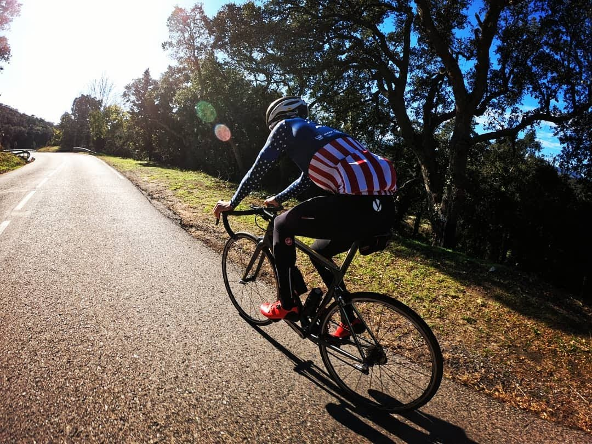

Partie expérimentale : Tests de nos résultats en pratique
Pour mettre en pratique nos recherches et vérifier nos résultats, nous avons réalisé des tests de cadence sur le terrain. Yann, coureur cycliste régulier, a pu effectuer plusieurs fois le même parcours à des cadences différentes. Il a pu mesurer sa fréquence cardiaque tout au long de l'effort et nous donner son ressenti après effort.
- Nos conditions d'expérience ont été les suivantes :
- Terrain de jeu : côte de 1.6 km avec un pourcentage moyen de 5%.
- Vitesse constante cible : 19.2km/h de moyenne, soit une puissance de 250 W (70% de la Puissance Max Aérobie)
- 4 répétitions à différentes valeurs de cadence cible : 60 - 75 - 90 - 105.
| n° répétition | Puissance moyenne (Watt) | Cadence moyenne (rpm) | Fréquence cardiaque moyenne (bpm) | Ressenti |
|---|---|---|---|---|
| 1 | 251 | 59 | 174 |
|
| 2 | 252 | 74 | 175 |
|
| 3 | 255 | 91 | 177 |
|
| 4 | 253 | 105 | 180 | |
Pour conclure, Yann s'est senti le mieux pour une cadence de 75 rotations par minute. Cela ne demandait pas trop de dépense énergétique (la demande en oxygène était largement soutenable) et une contrainte musculaire peu élevée. C’est cette cadence qui semble être le meilleur compromis parmi les 4 testées.
Les efforts ont été faits assis sur la selle, afin d'être en adéquation avec les conditions expérimentales du projet. Pour des raisons pratiques, les temps de récupération étaient assez courts (moins de 3 minutes). Afin que l'effort exercé lors d'une répétition n'ait pas d'influence sur les autres répétitions, les séries n’ont pas été réalisées à un effort maximal. En condition d'effort maximal, on aurait pu s’attendre à observer des résultats similaires, mais avec des différences entre les cadences plus marquées.